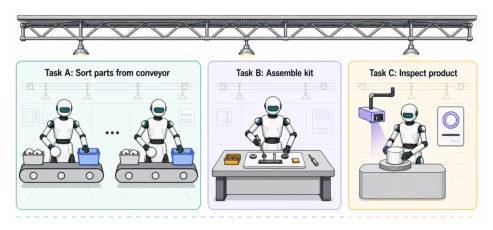
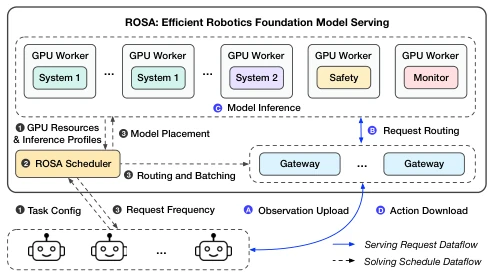
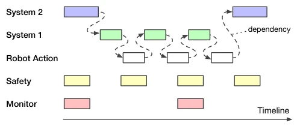
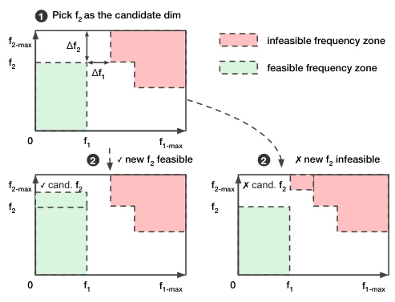
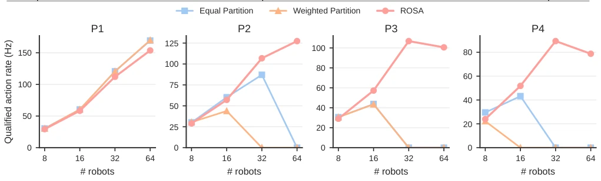
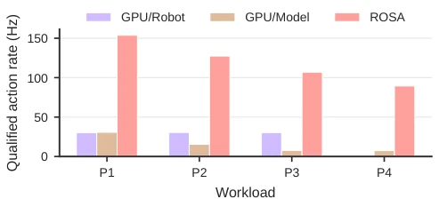

This paper imposes constraints on the "cloud brain" of robotic factories. The authors forcibly migrated robot reasoning from the edge to server clusters, a rather bold move. After all, robots currently still rely on edge computing; they directly implement a shared GPU pool, achieving high efficiency, with a 12-fold improvement sounding quite impressive. However, the cost is network dependency; is the factory environment network stable? Furthermore, regarding the scheduler, it divides tasks finely, but industrial sites have significant variability; how long can static scheduling withstand? However, breaking the old paradigm of "single robot, single model" and shifting towards factory-level goal optimization, this approach is indeed more pragmatic than merely optimizing latency metrics. It reveals the existing systems' dogma regarding "edge computing"; in fact, for factory scenarios, a centralized compute pool is the superior approach, though implementation details determine success or failure.
Existing RFM service systems have two misconceptions: One is the belief that reasoning must be edge computing, leading to compute waste and short battery life; The second is optimizing only single-model latency, ignoring multi-model pipelines (e.g., planning, safety, monitoring) and overall factory productivity. Although literature [6, 8, 11] optimized reasoning, it mostly targeted single robots or single models, lacking factory-level scheduling. ROS needs to solve problems of multi-robot shared compute, multi-model collaboration, and throughput maximization under SLO constraints. Existing systems cannot handle multi-model dependencies and factory-level SLOs, leading to resource idling. Additionally, edge device compute is limited, making it difficult to run large Foundation Models, thus limiting the upper bound of robot capabilities. In factory scenarios, multi-robot collaboration and task priority management are key, rather than single-point latency.

Figure 1: Robots working on various tasks in a factory.
方法Method
ROSA 架构包含共享 GPU 池、网关和调度器。核心创新在于三点：1) 共享 GPU 池，机器人只负责控制，推理上云，提升算力和续航；2) 声明式编程抽象，允许定义多模型流水线（System 1/2/安全/监控）及故障回退策略；3) 工厂目标驱动调度，将模型分为“义务型”（安全/监控）和“目标耦合型”（动作/规划），用 ILP 优化加权吞吐量而非单请求延迟。实现基于 Ray Serve，支持 vLLM/PyTorch/JAX。调度器结合启发式和 ILP，处理异构任务，支持动态适应。具体而言，调度器先计算义务模型的最小资源占用，剩余资源用于最大化目标模型的动作率。通过二分搜索和 ILP 打包，确保 SLO 满足。
The ROSA architecture includes a shared GPU pool, a gateway, and a scheduler. The core innovations lie in three aspects: 1) Shared GPU pool, where robots are only responsible for control and reasoning is offloaded to the cloud, improving compute power and battery life; 2) Declarative programming abstraction, allowing the definition of multi-model pipelines (System 1/2/Safety/Monitoring) and failure fallback strategies; 3) Factory goal-driven scheduling, classifying models into "obligatory" (Safety/Monitoring) and "goal-coupled" (Action/Planning), using ILP to optimize weighted throughput rather than single-request latency. Implementation is based on Ray Serve, supporting vLLM/PyTorch/JAX. The scheduler combines heuristics and ILP, handles heterogeneous tasks, and supports dynamic adaptation. Specifically, the scheduler first calculates the minimum resource occupancy of obligatory models, with remaining resources used to maximize the action rate of goal models. Through binary search and ILP packing, it ensures SLO compliance.

Figure 2: ROSA system overview.

Figure 4: An example multi-model RFM inference pipeline.

Figure 5: Adaptive frequency search over heterogeneous tasks.

Figure 6: Single-task end-to-end performance measured as SLO-qualified action throughput.
Tested on Franka Panda real robots and synthetic large-scale loads. Baselines include single-robot dedicated GPU and shared server without scheduling. Results show ROSA productivity improved by 12.06 times, compared to the no-scheduling shared scheme, an improvement of 2.44 times. Ablation experiments indicate that scheduling decisions (request rate control, resource allocation, batching) are the sources of gain. 8 H200 cards support 64 virtual robots, verifying scalability. Tests covered different task types, demonstrating system stability under different SLOs. Specific metrics include SLO-compliant action throughput, demonstrating the optimal solution under resource constraints. Experiments also compared performance under different network latencies, confirming the feasibility of centralized services.

Figure 7: ROSA versus dedicated serving baselines.